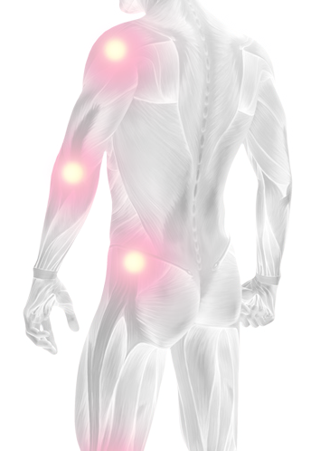

01. Anatomía y Fisiología
C. Sistema muscular
Músculos estriados esqueléticos

El músculo estriado esquelético es también denominado músculo esquelético o, simplemente, músculo, en el lenguaje popular.
La cantidad de músculos de un individuo se llama masa muscular. El porcentaje de masa muscular individual puede representar hasta el 49% de su peso corporal total.
La masa muscular varía relativamente entre hombres y mujeres. Por ejemplo, en hombres y mujeres típicos, entre 20 y 24 años de edad, las respectivas proporciones de masa muscular son del 45 y 36% del peso corporal.
La mayoría de los músculos esqueléticos se extiende de un hueso a otro. Es exactamente porque se unen a los huesos del esqueleto que ellos son llamados músculos esqueléticos.